Teaching an app to understand what your palate actually wants.
"What to eat?" is the one question everyone asks and no app actually answers.
Every food app sits somewhere between three ideas that never quite meet: food exploration apps that show you what's nearby, personality tests that tell you who you are, and taste science that explains why you like what you like. None of them ask what your palate specifically wants tonight, or help a table of four people with four different palates agree on where to go.
Taste Buds is a mobile app built around three moments: Learn your evolving palate, Explore recommendations that feel like a friend's suggestion instead of an algorithm, and Blend your taste with friends to end the "where should we eat" debate for good.
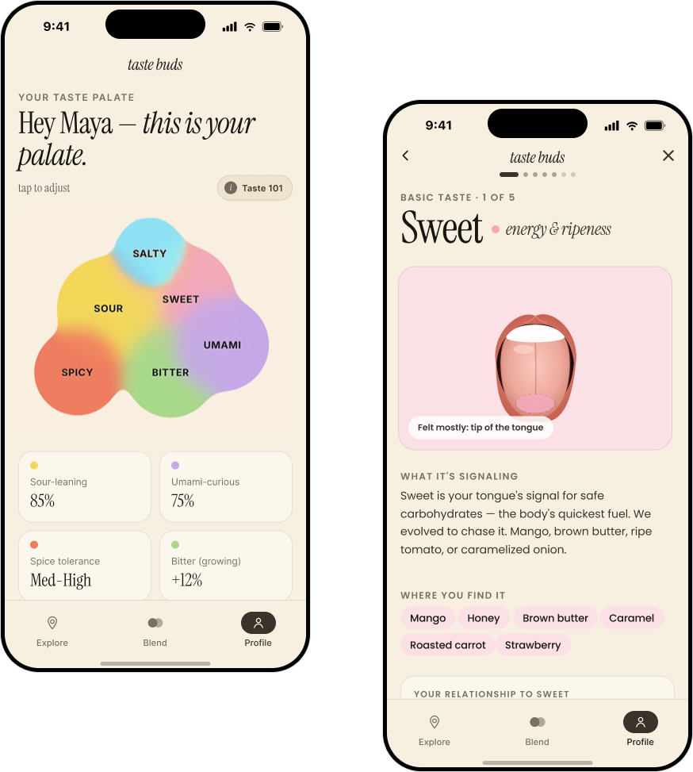
Your taste palate, visualized as an overlapping blob instead of a list of percentagesEvery food app assumes you already know what you want.
Search and review platforms sort by rating, distance, or cuisine type, none of which describe how a dish will actually taste to you. And the moment a second person joins dinner, the whole system breaks down into a group chat of restaurant links nobody commits to.
1. Taste is personal, but recs are generic.
A 96% rating tells you what a crowd thought. It doesn't tell you whether you, specifically, will love a sour-forward broth or find it off-putting.
2. Group decisions collapse to the lowest common denominator.
Without a way to actually see where a group's tastes overlap, plans default to whatever's safest and least interesting for everyone.
Learn your palate, explore what fits it, blend it with the people you eat with.
Onboarding builds a taste profile in under a minute. From there, every dish you rate refines it, every recommendation is scored against it, and every friend you add becomes another palate to blend into a plan.
View Full Prototype →1. Learn: get to know your own tastebuds
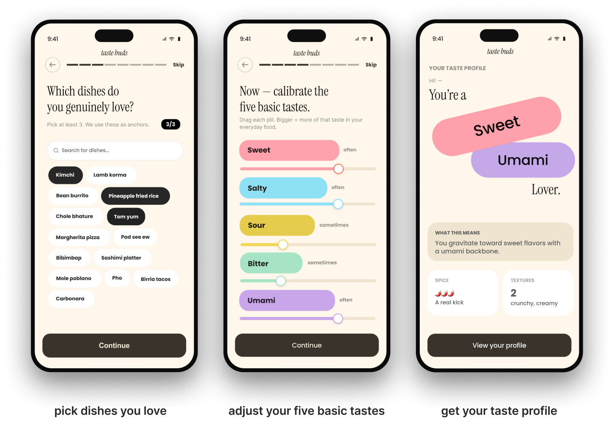
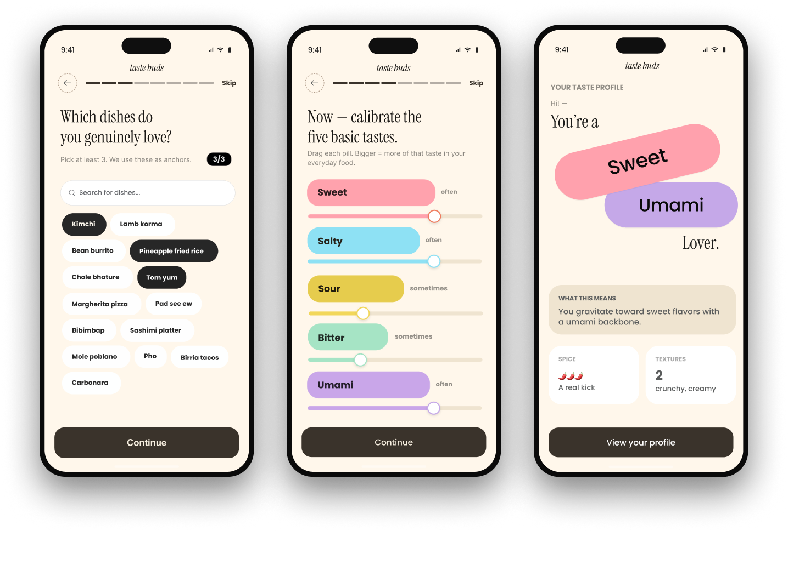
Build a profile from dishes, not a quiz
Instead of asking abstract preference questions, onboarding starts with dishes you already love as anchors, then lets you fine-tune sweet, salty, sour, bitter, and umami with a simple drag. The onboarding provides a named taste identity like "Sweet & Umami Lover," plus a first read on spice tolerance and texture preferences.
2. Explore: recommendations that feel like a friend, not an algorithm
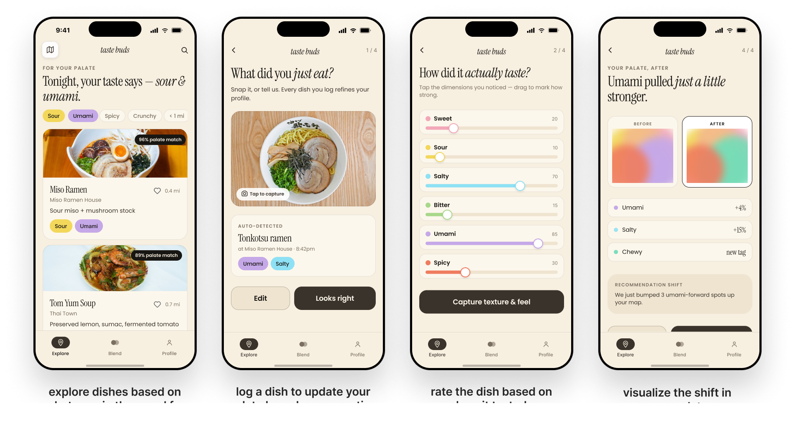
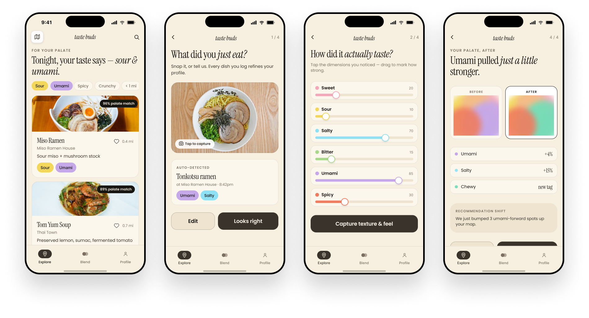
Every dish you log sharpens the next recommendation
Explore opens with a plain-language read of what you're craving tonight, not just a list. Snapping or logging a meal afterward updates your profile in real time. The moment a rating shifts your umami score, Explore tells you exactly which upcoming recommendations just changed because of it.
3. Blend: end the "where should we eat" debate for good
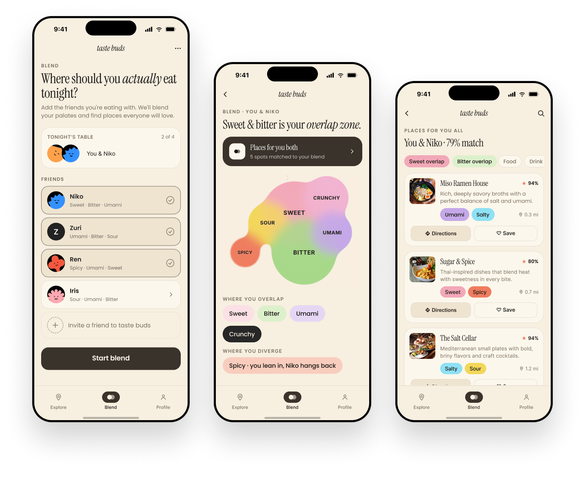
Merge palates into one shape you can actually read
Add anyone you're eating with and Taste Buds blends your profiles into a single overlapping shape, sweet and bitter here, spicy there, so it's obvious at a glance where you agree and where one of you is compromising. Then it scores nearby restaurants against that blend instead of an average of star ratings.
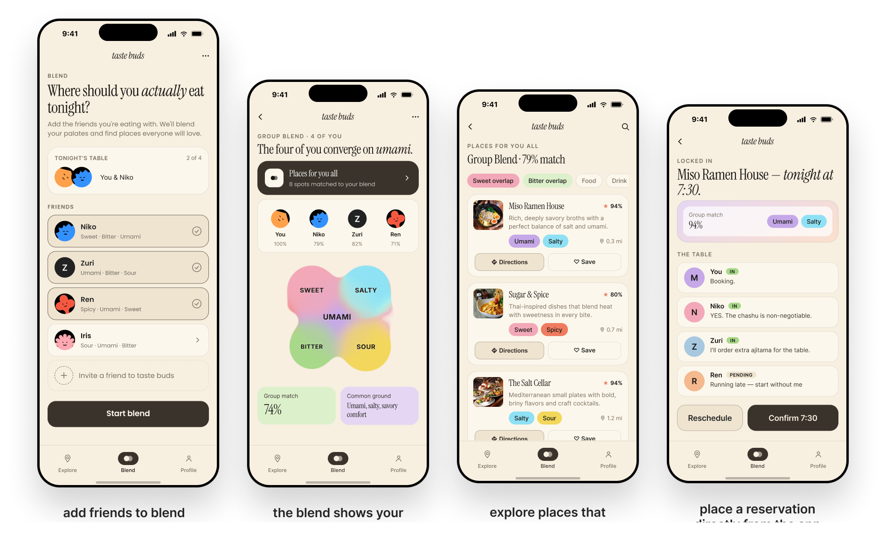
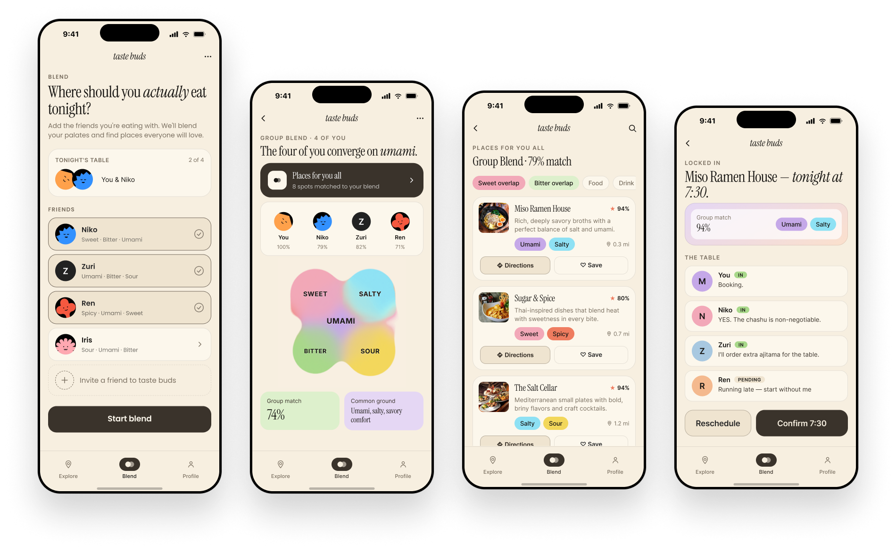
From a pair blend to a full table
The same overlap logic scales to a group: everyone's individual match percentage rolls up into one group match and a plain-language "common ground" summary. Once a spot is picked, the table view tracks who's in, who's pending, and locks in the reservation, so Blend ends at an actual dinner, not just a suggestion.
An inviting design system, built to spark interest.
Cream paper and ink stand in for white and black, warmer without losing contrast. Instrument Serif carries headlines and match scores in italics, while Poppins handles the everyday copy. The same six pastel tastes, sweet, sour, salty, bitter, umami, spicy, show up everywhere: chips, blobs, recommendation tags, always meaning the same thing. Corners stay soft, nothing sharper than 12px, echoing the same organic shape as the taste blob itself. A round of accessibility testing then ran every color pairing through a contrast checker.
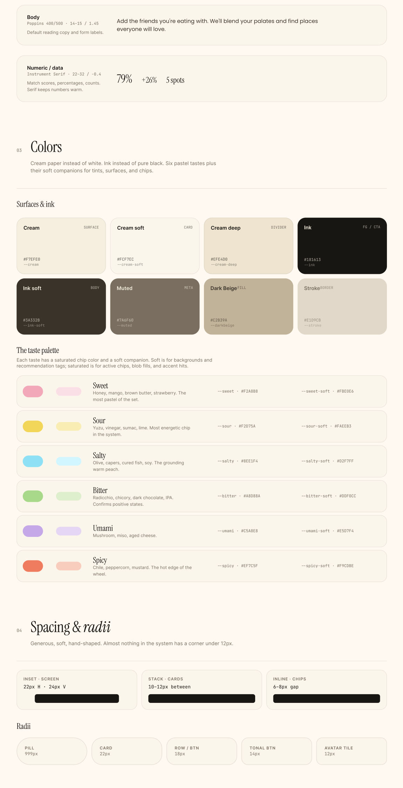
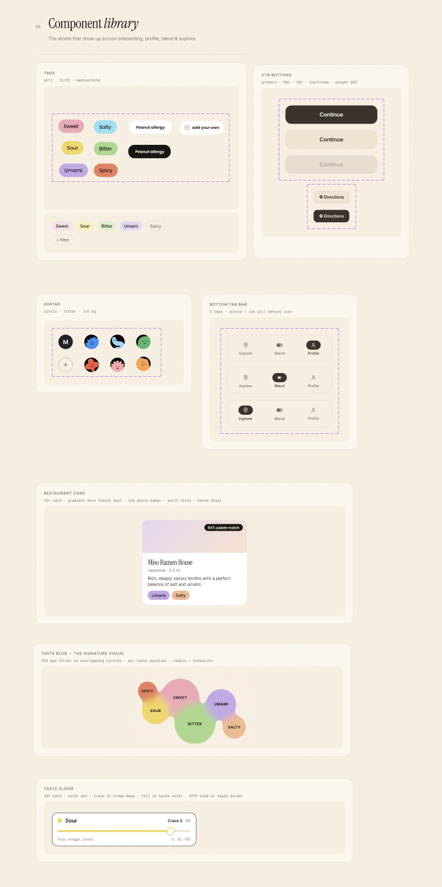
The design system paired with a reusable component library, so every tag, card, and slider across onboarding, profile, Blend, and Explore is built from the same UI kitLike a palate, the product kept evolving.
Every major visualization in Taste Buds went through at least one full rebuild after we watched someone try to use it.
From a tongue map and a scatter of dots, to one shape.
The first version of the taste profile paired a floating tongue diagram with six disconnected colored circles, one per taste. It looked scientific but tested badly: people couldn't tell if bigger meant "more" or "better," and nothing about it felt personal to them. We replaced both with a single merged, organic blob where each taste bleeds into its neighbors. Overlap and preference became something you could feel at a glance instead of something you had to decode.
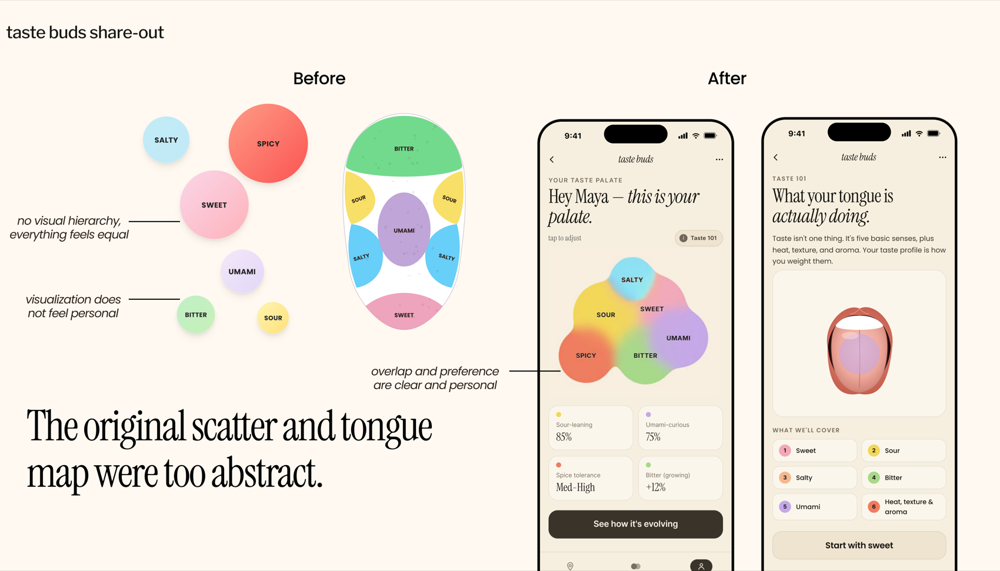
The original scatter and tongue map were too abstract; the merged blob reads as one personal shapeBlend needed to show where you agree, not just that you match.
An early Blend screen placed two people's taste circles side by side with a dividing line, "feels disconnected" was the feedback we got back, and nobody understood what the overlap actually meant. The fix was the same merged-blob language from the palate screen, now shared between two people, with explicit "where you overlap" and "where you diverge" labels so the takeaway is legible without explanation.
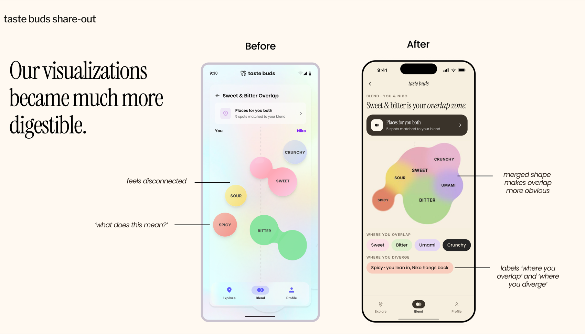
A merged shape and explicit overlap/diverge labels made the same data instantly readableBlend only worked for two people, until we asked why anyone would use it in real life.
Users kept telling us they wanted to Blend with a group, not a single friend, dinner is rarely just two people. We rebuilt Blend around groups from the ground up: everyone gets an individual match percentage against the group, a shared "common ground" summary in plain language, and a live table view that tracks RSVPs until the reservation is locked in.
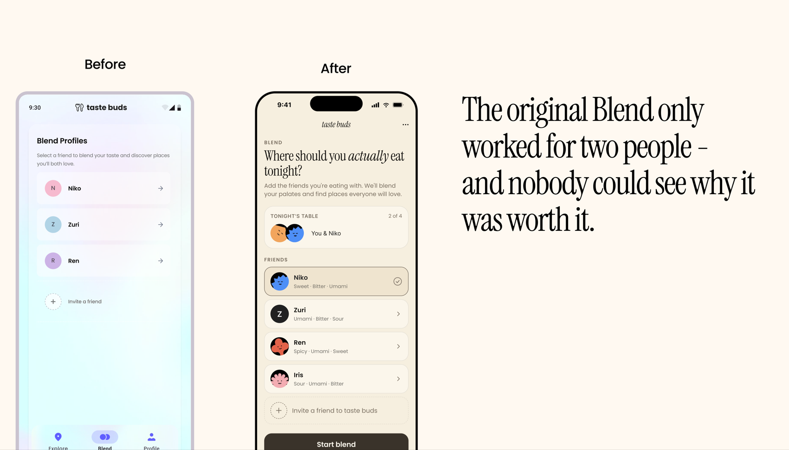
Moving from pair blends to group blends let a full table converge on umami and lock in a reservation togetherUsers generally preferred the tongue visualization over the taste-bud framing, since it felt less abstract, and didn't understand the difference between a taste palate and taste buds.
— Round 1 usability testingPitching Taste Buds to a room of people who actually eat out together.
We presented Taste Buds to a group of everyday users, walking through Learn, Explore, and Blend end to end and asking them to react honestly.
Everyone loved the idea and saw a lot of potential in it.
— Pitch session feedbackTwo ideas came up unprompted, without us asking for them. First, a real B2C opportunity: restaurants could highlight and market their own unique flavor combinations directly to the palates that would actually love them, instead of competing on generic star ratings. Second, genuine interest in a more social, community layer, being able to explore recommendations from friends, and specifically from people you've blended with in the past, not just your own solo palate. Both point toward the same next step for Taste Buds: growing from a personal palate tool into something people explore together, which is exactly the direction we started sketching in Future.
Taste Buds as an ecosystem, not just an app.
Scaling past the happy path means asking harder questions about data, friction, and who gets left out.
Cultural mapping
Taste is cultural as much as personal. A future version could map a palate's geographic roots, showing someone who leans sour and umami how their taste aligns with specific regional cuisines.
Restaurant partnerships
Rather than relying purely on crowdsourced data, restaurants could partner directly with Taste Buds to surface hidden menu items or fusion dishes that precisely match a niche palate.
Community-led exploration
Beyond solo discovery, users could follow "Taste Curators," local chefs, food bloggers, or friends with a similar palate, and explore restaurants through their specific taste lens.
What we still need to learn
Does Blend work when someone doesn't have the app?
To keep the barrier to entry low, we need a "Guest Blend" experience, a quick way for a group to calibrate tastes instantly without anyone making a full account.
Is there really value in the visualizations, or just delight?
An open question we're still testing for. We're committed to investing in a visual language that makes taste nuance concrete and intuitive, not just pretty.
How does this system actually help someone's palate evolve?
Today Taste Buds only suggests what to eat next. We're exploring moments of surprise that nudge users toward unfamiliar flavor territory in a way that feels rewarding instead of risky.
What I learned
Visualizing something invisible is a design problem, not a decoration problem.
Taste has no natural visual language. Our first instinct was to borrow one, a tongue map, a scatter plot, because it looked scientific. The breakthrough was realizing the shape itself had to carry the meaning: merged where tastes overlap, separate where they don't. That's a much harder problem than picking prettier colors, and it's the one that actually moved the needle in testing.
Design for the group, not the pair.
Blend's biggest jump in usefulness didn't come from a visual polish pass, it came from admitting the two-person version solved a smaller problem than the one people actually had. Dinner is rarely just two people, and the product only became worth using once it matched that reality.
Confusing feedback is still useful feedback.
Round 1 testing told us people didn't understand "taste palate" versus "taste buds," or why Blend mattered before they'd tried it. Neither note told us exactly what to build, but both told us precisely where the product stopped explaining itself, which is often more useful than being told what to add.